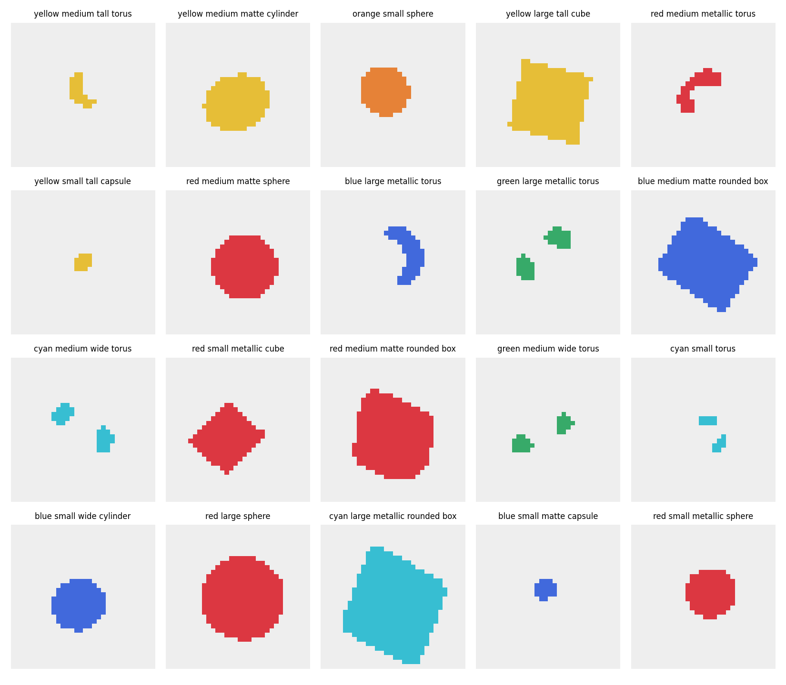
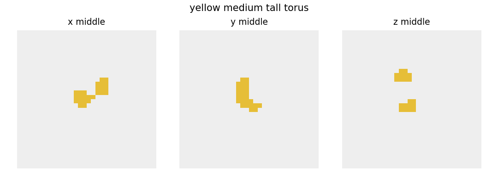

The Project
The project is called Tiny3D-Latent. It is not trying to compete with current production models. It is a low-level learning project: build the pieces small enough to understand them, but real enough that they form a complete 3D generation pipeline.
text label
-> condition vector
-> tiny latent generator
-> 3D latent
-> decoder
-> voxel grid / TSDF
-> mesh
-> preview renderWhy Start With A Dataset?
Before a model can generate 3D objects, it needs examples of what 3D objects look like. I could begin with a real dataset such as Objaverse or ShapeNet, but that would add many problems immediately: mesh cleanup, scale normalization, licenses, inconsistent quality, and much larger preprocessing work.
For the first milestone, I wanted the opposite: a dataset I could inspect completely. So I generate simple shapes with math.
What The Dataset Looks Like
Pixels
A normal image is a grid of pixels. Each pixel stores color at one place in a flat image.
image = height x widthVoxels
A voxel grid is the 3D version. Each voxel is a tiny cube in space. In this project, a voxel stores whether that part of space is empty or filled.
object = depth x height x width
Each training example is a 32 x 32 x 32 occupancy grid:
0 = empty space
1 = inside the objectThe small diagram above is only one flat slice through a 3D object. Stack many slices like that and you get the full volume.
One Concrete Example
Here is one real example from the generated dataset:
shape_000007red medium matte spheresphere[32, 32, 32]1709data/procedural/train/shape_000007_occupancy.npy{
"id": "shape_000007",
"label": "red medium matte sphere",
"shape_type": "sphere",
"grid_shape": [32, 32, 32],
"grid_dtype": "uint8",
"grid_file": "data/procedural/train/shape_000007_occupancy.npy"
}Later, the autoencoder will read the voxel grid from that file and learn to compress and reconstruct its 3D shape.
What I Built In This Milestone
- spheres
- cubes
- rounded boxes
- cylinders
- capsules
- tori
data/procedural/
train/
val/
metadata.json
dataset_stats.jsonThe current dataset contains 1,200 generated objects:
| Split | Count |
|---|---|
| Train | 1000 |
| Validation | 200 |
Dataset Preview
I also generate preview images so I can inspect the dataset without opening raw arrays.

A Useful Confusion: Why A Torus Did Not Look Like A Torus
One preview label said green medium wide torus, but the image looked like two
green blobs. At first that seemed like a bug. It turned out to be a visualization lesson.
The dataset stores a 3D torus. The preview shows only one 2D slice through it. A rotated torus can be sliced in a way that intersects only two small parts of the ring.
3D torus:
full donut shape
single 2D slice:
two separate pieces
That was a good early reminder: if I inspect 3D data with weak visualizations, correct geometry can look wrong. In a later milestone I will move toward mesh extraction and better 3D previews.
Current Limits
- The dataset does not contain real objects like cups or chairs yet.
metallicandmatteare currently labels only; they do not yet change geometry or create material channels.- The previews are 2D slices, not true mesh renders.
- The data is synthetic and much cleaner than a real mesh dataset.
What Comes Next
The next milestone is to turn these voxel grids into actual mesh assets:
occupancy grid
-> marching cubes
-> mesh
-> preview renderThat will make the 3D nature of the data much easier to inspect and will set up the later model stages, where the system starts learning and generating shapes rather than just constructing them procedurally.